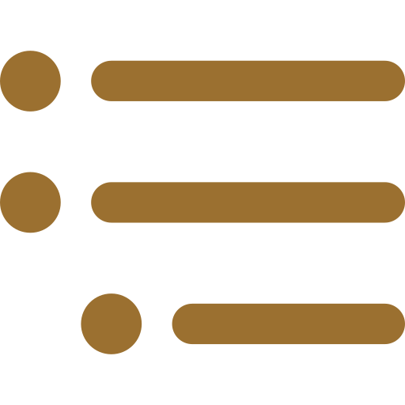

2. Recollection: Seeking refuge – what’s next? Recounted by Ajahn Karuṇadhammo. [Three Refuges] [Impermanence] // [Sensual desire] [Ajahn Karuṇadhammo] [Psychic powers] [Views] [Western Ajahn Chah lineage]
Story: 13-year old Glenn DeMaria participates in parapsychology research. [Science]
13. Recollection: Another surprise from Luang Por Sumedho: “I’d like you to come to Amaravati and take over as abbot.” Recounted by Ajahn Amaro. [Ajahn Sumedho] [Ajahn Amaro] [Amaravati ] [Abbot] // [Abhayagiri] [Travel] [Retirement] [Ajahn Pasanno] [Saṅgha decision making]
Reflection: All things are impermanent patterns of experience. [Not-self] [Impermanence]
14. Reflection by Ajahn Amaro: “Do you miss Abhayagiri?” [Ajahn Amaro] [Abhayagiri] [Grief] // [Present moment awareness] [Impermanence] [Cause of Suffering] [Relinquishment]
Quote: “Nothing can really be owned, and there is no person there to own it.” [Not-self] [Conventions ] [Impermanence] [Ageing]
15. Recollection: Ajahn Amaro loses the ability to read due to a temporary ischemic attack. Recounted by Ajahn Amaro. [Ajahn Amaro] [Sickness] [Impermanence] // [Ajahn Karuṇadhammo] [Ageing ] [Health care] [Not-self] [Relinquishment] [Liberation]
2. Reflection by Ajahn Damrong: “I’ve seen so many cremations; I’m not sure who’s going to go next.” Translated by Ajahn Ñāṇiko. [Death] [Funerals] [Impermanence] // [Ageing] [Monastic titles]